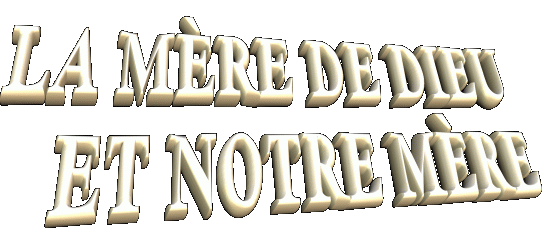
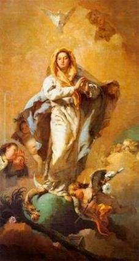

 - Aux derniers moments de la vie du SAUVEUR, � la Croix, MARIE qu��tait
� c�t� des Saintes Femmes et de
- Aux derniers moments de la vie du SAUVEUR, � la Croix, MARIE qu��tait
� c�t� des Saintes Femmes et de l'Ap�tre Jean, a re�u la conclusion du
testament de J�SUS. Le SEIGNEUR nous a donn� SA M�RE pour �tre aussi
"NOTRE M�RE".
Sans aucun doute, ce a �t� un pr�cieux cadeau pour l'humanit� de toutes les g�n�rations,
le meilleur de touts les cadeaux, parce que notre M�RE TRES SAINTE toujours est
all� la parfaite M�RE de J�SUS.
l'Ap�tre Jean, a re�u la conclusion du
testament de J�SUS. Le SEIGNEUR nous a donn� SA M�RE pour �tre aussi
"NOTRE M�RE".
Sans aucun doute, ce a �t� un pr�cieux cadeau pour l'humanit� de toutes les g�n�rations,
le meilleur de touts les cadeaux, parce que notre M�RE TRES SAINTE toujours est
all� la parfaite M�RE de J�SUS.
Dans les s�quences des ann�es,
la VIERGE MARIE jamais a manqu� ou a n�glig� le choix de �tre la M�RE DE
L�HUMANIT�, fait par SON Divin FILS, au contraire, ELLE toujours s'est r�v�l�e
avec la disposition pour aider, secourir et assister, comme une v�ritablement
M�RE admirable, d�s l'�poque de la premi�re Communaut� Chr�tienne quand ELLE
participait et accompagnait les principales r�unions des Disciples. Cependant
ELLE n��tait pas le chef des Ap�tres. SA pr�sence rem�morait le SEIGNEUR J�SUS
et s�imposait par SA personnalit�, aussi par SA sagesse et par SA caract�re
solide et stable, qu�indubitablement la r�v�lait comme une M�RE exceptionnelle,
singulier et unique.
Dans plusieurs des opportunit�s,
les Disciples ont demand� SES conseils pour les guider et meilleur se orienter
dans leurs d�cisions, parce que SES mots �taient pleins de sapience, ils
apportaient une abondant lumi�re que �taient pr�cieuses inspirations pour
solutionner toutes les questions. Ils sentaient que l'ESPRIT du SEIGNEUR parlait
par SES l�vres...
Chaque personne qu�il demandait
SES conseils, recevait une attention sp�ciale, les soins les plus z�l�s et la
orientation beaucoup de s�r, que les guidaient par meilleur choisir le chemin
que allait les conduire au CR�ATEUR.
Aussi en MARIE c'�tait toute
l'histoire de J�SUS!...
Combien de fois venaient les
caravanes de p�lerins pour �tre avec ELLE et �couter de vive voix de ces
d�licieuses m�moires de SON Divin et si cher FILS!...
 Et aussi, combien et combien des
fois, les Disciples � ELLE demandait que les ait dit les passages de la Vie de
NOTRE SEIGNEUR, MARIE avec une grande affection et un profond sentiment
affectueux, d�crivait SES habitudes intimes, aussi bien que des d�tails de SA
fa�on personnelle de voir et analyser les faits et les choses de chaque jour!...
Et aussi, combien et combien des
fois, les Disciples � ELLE demandait que les ait dit les passages de la Vie de
NOTRE SEIGNEUR, MARIE avec une grande affection et un profond sentiment
affectueux, d�crivait SES habitudes intimes, aussi bien que des d�tails de SA
fa�on personnelle de voir et analyser les faits et les choses de chaque jour!...
C'�taient des le�ons pleines de
tendresse, de permanente fid�lit� et d'une d�monstration d�une immense et
illimit�e d'amour.
Quand ELLE finissait de parler,
montrait toujours une expression nostalgique, de SES beaux yeux ELLE laissait
sortir une larme que glissait doucement par SA face pleine d'�motion et tombait
par le terre.
Second la
"Tradition Chr�tienne", MARIE est pass�e de la
vie terrestre � la vie �ternelle aux 72 ans d��ge. Nous disons qu�ELLE est
pass�e, parce que dans le sens Th�ologique, ELLE n'est morte pas, ELLE a eu
un "sommeil transitoire"
et a �t� transport�e au Ciel, en Corps et �me, pour
une suite sonore d'Anges.
En consid�rant que la mort est
la punition inflig�e sur Adam et ses descendants (l'humanit�), � cause du p�ch�
original et des p�ch�s subs�quents, MARIE a eu une Conception Immacul�e et �tait
pleine de gr�ces par la d�termination du CREATEUR,
pour le m�rite d'�tre la M�RE du SEIGNEUR J�SUS. Ainsi, ELLE a �t� prot�g�e par
le SAINT-ESPRIT des tentations du diable, et pour cela n'a eu jamais aucun de
p�ch�, m�me un petit. Par cons�quent, ELLE n'est morte pas, SA vie a eu une fin,
a atteint SA objectif. ELLE a ferm� SES yeux pour dormir et s'est r�veill�e dans
l'�ternit�. Comme c�est logique, cette Corps Immacul� ne pourrait pas �tre
d�fait dans la tombe comme un corps Common. ELLE est dans le Ciel ensemble le
DIEU.
Depuis le si�cle V, l'�glise
comm�more l'Ascension de NOTRE DAME au Ciel le 15 ao�t.
Au Ciel, uni � DIEU, tout SA amour et
profonde affection au SAINT P�RE aussi bien que pour les choses Divines,
ils ont �t� �tendus � l'humanit� enti�re, comme notre pr�cieux et
efficace intercesseur. Vraiment ELLE est assum� la place de M�RE de l'humanit�,
en aidant, en inspirant et avec beaucoup des attentions et avec un grand amour
maternel pour tous SES fils que cherchent SA ineffable protection.
Il y a longtemps que NOTRE DAME
est vu par les voyants dans les notables manifestations surnaturelles, en
apportant des messages, les enseignements Divins et en laissant tout le monde
conna�tre la derni�re Volont� du SEIGNEUR, par que SA fils ils soient guid�s par
le chemin de la justice, du droit et de l'amour fraternel. Dans chaque place
qu�ELLE a paru, c�est all� d'une mani�re diff�rente, avec un v�tement propre et
une expression physionomique qu�il marquait l�Apparition et la place de
l'�v�nement.
Bien que notre M�RE TRES SAINTE
soit seulement une personne, ELLE est connue par des plusieurs noms: NOTRE
DAME DE CARME, NOTRE DAME DE LOURDES, NOTRE DAME
APPARUE, NOTRE DAME DE FATIMA, NOTRE DAME ROSE MYSTIQUE,
NOTRE DAME DU ROSAIRE, NOTRE DAME DE MEDJUGORJE, NOTRE
DAME D'AKITA, NOTRE DAME DE LA VICTOIRE, IMMACUL� C�UR
DE MARIE, NOTRE DAME DE NAJU
et beaucoup d'autres.
Quand nous regardons l'image de
la VIERGE MARIE nous sentons un encouragement dans notre c�ur qui fortifie notre
spiritualit� et qui console notre �me. C'est l�immense et grandiose amour de
NOTRE M�RE, qui d�borde de l'�ternit� et entoure SES images et SES photos, d'une
tendresse admirable, repl�te de un doux amour maternel.
FIN

 Page Suivante
Page Suivante
Page Ant�rieure
Revient � l'Index